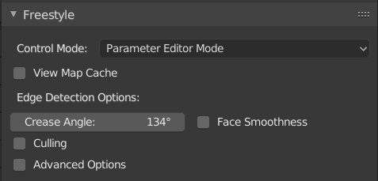

View maps¶
参考
- 面板

Freestyle面板。¶
每个渲染层只有一个view map，它作用于控制边缘检测参数。
- 控制模式
用于检测实际上已渲染的边缘，并且将从头到尾地执行控制:
- 参数编辑器模式
用户友好性 parameter editor.
- Python 脚本编写模式
功能强大但稍显复杂 Python scripting.
- View Map Cache
该选项用于重用先前计算的视图映射，以供后续渲染。当输入三维场景的网格几何结构被改变时，缓存将自动更新。
此功能提供了一个主要的性能提升，就是在Freestyle的动画渲染时，当相机空间网格的几何结构是静态的，如同重复，则依然以直线化选项进行渲染。
虽然 ''View map cache'' 复选框是在某个渲染层的勾选，但缓存结果是所有的渲染层和场景间共享的。这意味着，如果Freestyle是用于两个或两个以上的渲染层（可能在不同的场景通过排序），一个渲染层的缓存由另一个渲染层的新缓存代替，因此显示上不存在变化。
- 面平滑度
启用*面平滑度*功能则将被纳入到边缘计算中。
- 角阈值
如果两个相邻的面形成小于所定义的*角阈值*的角，则在使用线集中的边缘类型选择时将呈现它们之间的边缘。该值也影响*轮廓*边缘类型选择。
- 背面剔除
如果启用此项，将忽略视野外的边线（略去某些进程，以节省加载时间和减少内存耗用，但会一定程度的降低呈现的品质）。